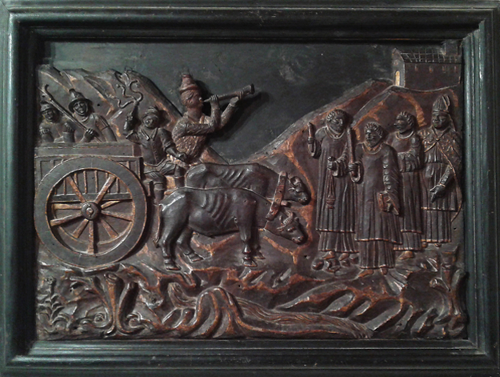

La Cattedrale di
Santa Maria Assunta
e San Pardo

La chiesa non è solo uno scrigno di arte e storia, ma anche il luogo fisico dove si rinnova il legame tra i larinesi e il loro Patrono.
“Questa Chiesa dunque, della quale si parla, sta situata quasi in mezzo della Città, avendo avanti una larga, e spaziosa piazza, ed al di fuori fa pompa di una maestosa facciata tutta intera, composta di pietre quadre [...].”
G. A. TRIA, Memorie storiche civili ed ecclesiastiche
della città e diocesi di Larino, metropoli degli antichi frentani,
Roma, 1744, p. 199
Le origini della Cattedrale, come le origini della Larino medievale, sono avvolte nel mistero.
È probabile che l'attuale chiesa, consacrata nel 1319 dal vescovo Raone de Comestabulo, sia stata costruita su un precedente edificio di culto.
La tradizione vuole che le reliquie di San Pardo, quando nell'842 arrivarono a Larino, furono deposte nella chiesa di Santa Maria Madre di Dio.
L'identificazione di questa chiesa ha messo a dura prova gli storici che si sono occupati delle vicende millenarie di Larino, identificazione che non ha mai trovato una risposta sicura.
Entrando nel campo delle supposizioni questa legendaria chiesa potrebbe essere l'antica cappella su cui venne edificata l'attuale chiesa di Santa Maria della Pietà, oppure l'edificio di culto che ha preceduto l'attuale Cattedrale.
Per saperne di più...
Titolovai alla risorsa
 La Laudata
La Laudata
La Laudata è il canto intonato dai carrieri che accompagna la carrese e scandisce i momenti principali della festa.
Attraverso questa melodia antichissima i larinesi cantano a squarciagola a Dio la loro fede, cantano il risveglio primaverile della natura, cantano al loro santo Patrono invocandone la protezione, cantano il loro senso di appartenenza alla comunità.
Durante la carrese la laudata crea un dialogo improvvisato tra i carrieri in cui ad un cantore che intona una strofa risponde un altro con la strofa successiva.
La Laudata
Davanti alla facciata della Cattedrale la laudata intona versi dall'alto contenuto teologico.
E' un inno al Salvatore attraverso san Pardo, le cui reliquie sono custodite nell'altare maggiore, la Madonna, san Primiano, copatrono di Larino, e i santi protettori delle comunità principali del basso Molise.
Davanti alla Cattedrale
 La Carrese
La Carrese
Il palcoscenico della Carrese
Il sagrato della cattedrale rappresenta il cuore della carrese.
E' qui, più che all'interno della chiesa che si rinnova ogni anno il legame tra i larinesi e il loro santo patrono.
E' qui che i carrieri la sera del 25 maggio portano il simulacro di san Primiano.
E' qui il 26 maggio i carrieri e i buoi rendo omaggio a san Pardo.
E' qui la sera del 27 maggio tra canti e applausi l'intera comunità saluta il rientro del loro santo in cattedrale.